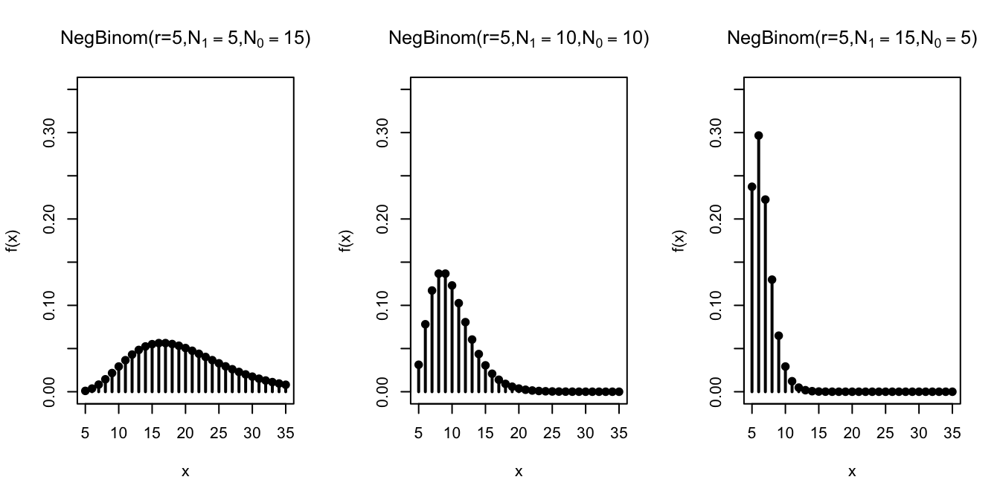
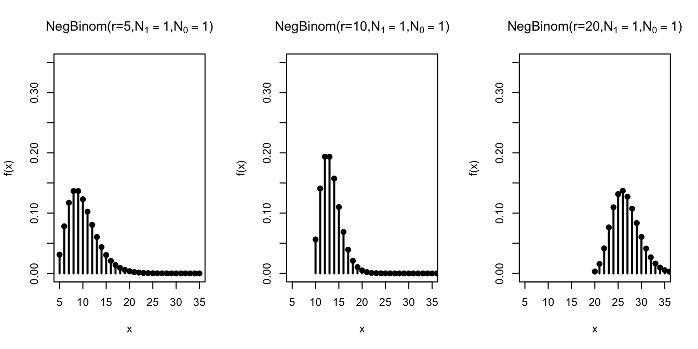

Lesson 15 Negative Binomial Distribution
Motivating Example
On a (American) roulette wheel, there are 38 spaces: 18 black, 18 red, and 2 green. You’ve been at the casino for a while now and decide to leave after you have won 3 bets on red. What is the probability that you leave the casino after placing exactly 5 bets on red?
Theory
To answer the question posed at the beginning of the lesson, we need a distribution like the geometric, except that stops after \(3\) \(\fbox{1}\)s have been drawn (instead of after the first \(\fbox{1}\)). The negative binomial is that distribution.
Theorem 15.1 (Negative Binomial Distribution) If a random variable can be described as the number of draws, with replacement, from the box \[ \overbrace{\underbrace{\fbox{0}\ \ldots \fbox{0}}_{N_0}\ \underbrace{\fbox{1}\ \ldots \fbox{1}}_{N_1}}^N \] until \(r\) \(\fbox{1}\)s have been drawn, then its p.m.f. is given by \[\begin{align} f(x) &= \dfrac{\binom{x-1}{r-1} N_0^{x-r} \cdot N_1^r}{N^x}, & x&=r, r+1, r+2, \ldots \tag{15.1} \end{align}\] where \(N = N_1 + N_0\) is the number of tickets in the box.
We say that the random variable has a \(\text{NegativeBinomial}(r, N_1, N_0)\) distribution, and \(r\), \(N_1\), \(N_0\) are called parameters of the distribution.
Equivalently, (15.1) can be written as \[\begin{align} f(x) &= \binom{x-1}{r-1} (1-p)^{x-r} p^r, & x &= r, r+1, r+2, \ldots, \tag{15.2} \end{align}\] where \(p = N_1 / N\) is the proportion of \(\fbox{1}\)s in the box. So we can instead specify the distribution as \(\text{NegativeBinomial}(r, p)\), where \(r\) and \(p\) are the parameters.Like the geometric distribution, there is no upper bound on the possible values of a negative binomial random variable. We might have to wait arbitrarily long to collect \(r\) \(\fbox{1}\)s. Also, note that the minimum possible value of a negative binomial random variable is \(r\). This makes sense because you need to have drawn at least \(r\) times before you can have \(r\) \(\fbox{1}\)s.
We will derive the formulas (15.1) and (15.2) later in this lesson. For now, let’s see how these formulas can be applied to real problems.
Example 15.1 (Three Wins in Roulette) There are 38 equally likely spaces on a roulette wheel, 18 of which are red. So we set up a box model where the \(\fbox{1}\)s represent the red spaces:
\[ \overbrace{\underbrace{\fbox{1}\ \ldots \fbox{1}}_{N_1=18}\ \underbrace{\fbox{0}\ \ldots \fbox{0}}_{N_0=20}}^{N=38} \]
The number of draws until we get \(r=3\) \(\fbox{1}\)s corresponds to the number of bets we make until we have won 3 times. So the number of bets follows a \(\text{NegativeBinomial}(r=3, N_1=18, N_0=20)\) distribution.
Therefore, we know its p.m.f. by (15.2): \[ f(x) = \binom{x-1}{3-1} \left( \frac{20}{38} \right)^{x-3} \left( \frac{18}{38} \right)^3. \]
To calculate the probability that we leave the casino after exactly 5 bets, we plug in \(5\) for \(x\): \[ f(5) = \binom{4}{2} \left( \frac{20}{38} \right)^2 \left( \frac{18}{38} \right)^3 \approx .1766. \]Now, let’s derive the p.m.f. of the binomial distribution.
Proof (Theorem 15.1). To calculate the p.m.f. at \(x\), we need to determine the probability that it takes exactly \(x\) draws to get \(r\) \(\fbox{1}\)s.
First, there are \(N^x\) equally likely ways to draw \(x\) tickets from \(N\) with replacement, taking order into account. (We must count ordered outcomes because the unordered outcomes are not all equally likely. See Lesson 4.)
Next, we count the outcomes where the \(r\)th \(\fbox{1}\) happens on the \(x\)th draw. We proceed in two steps:
Count outcomes that look like \[\begin{equation} \underbrace{\fbox{0}, \ldots, \fbox{0}}_{x-r}, \underbrace{\fbox{1}, \ldots, \fbox{1}}_{r}, \tag{15.3} \end{equation}\] where the \(r\) \(\fbox{1}\)s are all at the end. There are \(N_0\) choices for the first \(\fbox{0}\), \(N_0\) choices for the second \(\fbox{0}\), and in fact, \(N_0\) choices for each of the \(x-r\) \(\fbox{0}\)s, since we are drawing with replacement. Likewise, there are \(N_1\) choices for each of the \(r\) \(\fbox{1}\)s. By the multiplication principle of counting (Theorem 1.1), there are \[\begin{equation} N_0^{x-r} \cdot N_1^r. \tag{15.4} \end{equation}\] ways to get an outcome like (15.3), in that exact order.
Account for the possibility that the \(\fbox{1}\)s and \(\fbox{0}\)s were drawn in a different order than (15.3). Unlike the binomial, we cannot rearrange the \(\fbox{1}\)s and \(\fbox{0}\)s any order we like. With the negative binomial, the \(x\)th draw must be a \(\fbox{1}\), since
we need the \(r\)th \(\fbox{1}\) to come on the \(x\)th draw. Other than this last draw, we have complete freedom to rearrange the remaining \(r-1\) \(\fbox{1}\)s among the first \(x-1\) draws. Therefore, there are \(\binom{x-1}{r-1}\) valid arrangements of the \(\fbox{1}\)s and \(\fbox{0}\)s where that the \(r\)th \(\fbox{1}\) comes on the \(x\)th draw.
So the total number of (ordered) ways to get the \(r\)th \(\fbox{1}\)s on the \(x\)th draw is: \[ \binom{x-1}{r-1} \cdot N_0^{x-r} \cdot N_1^r. \]
Dividing this by the total number of outcomes, \(N^x\), gives the p.m.f.: \[ f(x) = P(X = x) = \frac{\binom{x-1}{r-1} \cdot N_0^{x-r} \cdot N_1^r}{N^x}. \]
To see that this formula is the same as (15.2), we write \(N^n = N^{x-r} \cdot N^{r}\). Then, we have: \[\begin{align*} f(x) &= \binom{x-1}{r-1} \frac{N_0^{x-r} \cdot N_1^r}{N^{x-r} \cdot N^{r}} \\ &= \binom{x-1}{r-1} \left( \frac{N_0}{N} \right)^{x-r} \left( \frac{N_1}{N} \right)^{r} \\ &= \binom{x-1}{r-1} (1 - p)^{x-r} p^r, \end{align*}\] where in the last line, we used the fact that \(\frac{N_0}{N} = \frac{N - N_1}{N} = 1 - \frac{N_1}{N} = 1 - p\).Visualizing the Distribution
Let’s graph the negative binomial distribution for different values of \(n\), \(N_1\), and \(N_0\).
First, we fix the number of \(\fbox{1}\)s at \(r=5\) and vary the composition of the box.

Not surprisingly, as we increase the number of \(\fbox{1}\)s in the box, the
\(\fbox{1}\)s are drawn sooner, so the \(r=5\)th \(\fbox{1}\) comes after fewer draws.
Next, we study the effect of increasing \(r\) on the negative binomial distribution.

Not surprisingly, when we require more \(\fbox{1}\)s by increasing \(r\), the distribution shifts to the right, indicating that it takes longer to achieve that goal.
Calculating Negative Binomial Probabilities on the Computer
The negative binomial distribution is built into many software packages. However, we have to check which definition the package is using. Some packages define a negative binomial random variable to be the number of \(\fbox{0}\)s that were drawn, instead of the total number of draws.
Solution. First, we will set up a box model for the number of calls. We have a box with
- \(N_0 = 85\) tickets labeled \(\fbox{0}\)
- \(N_1 = 15\) tickets labeled \(\fbox{1}\)
to represent the 15% chance of making a sale. We will draw from this box until we have drawn 10 \(\fbox{1}\)s, representing the 10 successful calls. We will assume that his success on one call is independent of his success on any other call, so we make the draws with replacement.
This shows that the number of calls, which we will call \(X\), follows a \(\text{NegativeBinomial}(r=10, N_1=15, N_0=85)\) distribution.
The probability that he has to make more than 40 calls is \(P(X > 40)\). To calculate this directly, we would have to evaluate an infinite sum: \[ P(X > 40) = f(41) + f(42) + f(43) + \ldots. \] The complement rule makes this slightly more palatable: \[ P(X > 40) = 1 - P(X \leq 40) = 1 - f(40) - f(39) - \ldots - f(10), \] but this is still a calculation that would be unpleasant to do by hand.Here’s how we would calculate the probability using the Python library Symbulate. We first specify the parameters of the negative binomial distribution. Note that Symbulate requires that the parameters be \(r\) and \(p\), so we have to convert \(N_1=15, N_0=85\) into \(p = 0.15\).
Calculating the probability directly involves evaluating the p.m.f. at infinitely many values, so we look at the
complement. We can evaluate the p.m.f. at all of these values using the .pmf() method and add the probabilities
using sum().
from symbulate import *
probs = NegativeBinomial(r=10, p=0.15).pmf(
range(10, 41) # range(..., 41) does not include 41
)
1 - sum(probs)## 0.9327797386121522Alternatively, we could also calculate this using the c.d.f. and the complement rule:
## 0.9327797386121518You can play around with the Python code in this Colab notebook.
It is also possible to do this calculation in R, a statistical programming language.
R defines the negative binomial distribution a bit differently; it only counts the number of
\(\fbox{0}\)s that were drawn, rather than the total number of draws. So we have to remember to
subtract the \(r=10\) \(\fbox{1}\)s from the total number of draws before passing the values to dnbinom or pnbinom.
## [1] 0.9327797We can also use the c.d.f. function:
## [1] 0.9327797You can play around with the R code in this Colab notebook.
Essential Practice
- Complete the sentence: The geometric distribution is a special case of the negative binomial distribution where \(r=\) _____.
Calculate the following probabilities.
You toss a coin 4 times. The probability that you get (exactly) 2 heads.
You toss a coin until you get 2 heads. The probability that it takes (exactly) 4 tosses.
In Major League Baseball’s Home Run Derby, each contestant is allowed to keep swinging the bat until they have made 10 “outs”. (An “out” is anything that is not a home run.) If Barry Bonds has a 70% chance of hitting a home run on any given swing, what is the probability that he hits at least 10 home runs before his turn is up?
Additional Exercises
- A medical researcher is recruiting 20 subjects for a study on an experimental drug for COVID-19. Each person that she interviews has a 60% chance of being eligible to participate in the study. What is the probability that she will have to interview more than 40 people?
- Your coach tells you that you cannot leave basketball practice until you have made at least \(20\) free throws. If you free throw probability is \(80\%\), find the probability that you are out of practice after taking an even amount of free throws.
- You have two coins. One coin is a fair coin with a \(.5\) probability of landing on heads. The other coin is a biased coin with a \(.25\) probability of landing on heads. You pick one of these two coins at random, and begin flipping until you get \(5\) heads. It takes you \(12\) flips in order to get your \(5\) heads. What is the probability that the coin you picked was the fair coin? What is the probability you picked the biased coin?